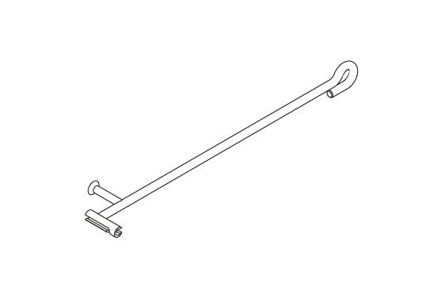

LEMON Manuals
: Even more car manuals for everyone: 1960-2025
Home
>>
Honda
>>
2016
>>
Civic LX, 4D Sedan, Automatic CVT Trans
>>
Repair and Diagnosis (Single Page)
>>
Accessories & Equipment
>>
Interior/Exterior Trim
>>
Exterior Panels / Trim - Service Information
>>
Removal and Installation
>>
Trunk Lid Torsion Bar Removal and Installation
>>
Notes
Trunk Lid Torsion Bar Removal and Installation: Notes
Special Tools Required
Image
Description/Tool Number

Courtesy of HONDA, U.S.A., INC.
Trunk Spring Tool 07AAF-T2AA200